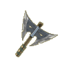
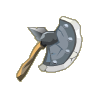
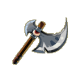
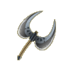

Menu barbok'you

Les Haches
| Niveau 1 | Hache de Bûcheron | |||
|---|---|---|---|---|
| # | Recettes : | Effets : | Caractéristiques : | Conditions : |
 |
1x Fer 2x Bois de Frêne |
Dommages : 2 à 4 (neutre) Vitalité : 1 |
PA : 4 Portée : 1 Bonus CC : +5 Critique : 1/40 Echec : 1/40 |
|
| Description : Cette hache est indispensable au bûcheron s'il veut correctement exercer son métier. Le cas échéant, elle peut également lui permettre de se débarrasser de quelques monstres... | ||||
| Niveau 1 | Hache Hémal | |||
|---|---|---|---|---|
| # | Recettes : | Effets : | Caractéristiques : | Conditions : |
|  | Dommages : 6 à 10 (terre) |
PA : 6 Portée : 1 Bonus CC : +5 Critique : 1/45 Echec : 1/45 |
Métier > Bûcheron (79) |
|
| Description : Cette hache est la seule capable de résister aux pouvoirs du Kaerlier et, donc, la seule à pouvoir le couper. | ||||
| Niveau 1 | Hache de l'apprenti bûcheron | |||
|---|---|---|---|---|
| # | Recettes : | Effets : | Caractéristiques : | Conditions : |
|  | Dommages : 1 à 3 (neutre) Initiative : 10 |
PA : 4 Portée : 1 Bonus CC : +5 Critique : 1/40 Echec : 1/40 |
||
| Description : Même si vous ne savez pas très bien manier la hache, vous ne risquez guère de vous couper avec celle-ci tant la lame est émoussée. Mais bon, en tapant suffisamment fort, vous arriverez bien à couper quelques arbres. | ||||
| Niveau 3 | Hachette de Bûcheron | |||
|---|---|---|---|---|
| # | Recettes : | Effets : | Caractéristiques : | Conditions : |
|  | 3x Bois de Châtaignier 1x Fer |
Dommages : 4 à 9 (neutre) Vitalité : 5 |
PA : 5 Portée : 1 Bonus CC : +5 Critique : 1/30 Echec : 1/30 |
Vitalité > 2 |
| Description : Cette hachette est l'outil indispensable à tout bûcheron. Non pas qu'elle soit réellement utile, impossible de couper un arbre avec, mais sa présence à la ceinture les calme et les rassure. | ||||
| Niveau 6 | Hachette Hévlalav | |||
|---|---|---|---|---|
| # | Recettes : | Effets : | Caractéristiques : | Conditions : |
|  | 3x Cuivre 1x Bois de Noyer |
Dommages : 6 à 10 (neutre) Vitalité : 7 Force : 5 |
PA : 4 Portée : 1 Bonus CC : +10 Critique : 1/40 Echec : 1/40 |
|
| Description : Cette petite hache ne sait pas couper les arbres, mais peut servir à se défendre contre certains petits monstres. Par contre il vous faudra toujours courir si c'est un Minotoror. | ||||
| Niveau 8 | La Trancheuse d'Arakne | |||
|---|---|---|---|---|
| # | Recettes : | Effets : | Caractéristiques : | Conditions : |
 |
5x Patte d'Arakne 1x Charbon |
Dommages : 7 à 11 (neutre) Vitalité : 1 à 10 |
PA : 4 Portée : 1 Bonus CC : +5 Critique : 1/50 Echec : 1/50 |
|
| Description : Fait très étrange, l'Arakne, n'a que quatre pattes velues, ce qui signifie qu'avec seulement quatre coups de haches, vous pourrez la transformer en Arakne Tronc. | ||||
| Niveau 8 | Mangeuse de Châtaignier | |||
|---|---|---|---|---|
| # | Recettes : | Effets : | Caractéristiques : | Conditions : |
 |
5x Fer 3x Bois de Frêne |
Dommages : 6 à 10 (neutre) Agilité : 3 Intelligence : -5 |
PA : 4 Portée : 1 Bonus CC : +5 Critique : 1/45 Echec : 1/45 |
Force > 8 Agilité > 3 |
| Description : Cette hache n'a rien de particulier si ce n'est que la légèreté naturelle du Bois de Châtaignier, permet à cette hache d'avoir un manche aussi léger qu'une plume de jeune Tofu Maléfique. | ||||
| Niveau 8 | Mangeuse de Frêne | |||
|---|---|---|---|---|
| # | Recettes : | Effets : | Caractéristiques : | Conditions : |
 |
4x Bois de Frêne 4x Fer |
Dommages : 6 à 10 (neutre) Chance : 10 Sagesse : -7 |
PA : 4 Portée : 1 Bonus CC : +5 Critique : 1/45 Echec : 1/45 |
Force > 10 Chance > 10 |
| Description : Cette hache n'a rien d'exceptionnel, mais elle reste tout de même appréciée des Bûcherons débutants, qui l'aiment pour sa simplicité d'utilisation . | ||||
| Niveau 12 | Hache Vôr'Om | |||
|---|---|---|---|---|
| # | Recettes : | Effets : | Caractéristiques : | Conditions : |
 |
3x Bois de Noyer 5x Fer 1x Bronze |
Dommages : 10 à 14 (neutre) Vitalité : 6 à 15 Agilité : 5 |
PA : 4 Portée : 1 Bonus CC : +10 Critique : 1/40 Echec : 1/40 |
Vitalité > 10 |
| Description : Cette série de haches fut conçue par un bwork apprenti forgeur. Elle est bien équilibrée et relativement puissante. Ce bwork venait de créer LA hache de guerre pour jeune aventurier. | ||||
| Niveau 15 | Hache Térophyle | |||
|---|---|---|---|---|
| # | Recettes : | Effets : | Caractéristiques : | Conditions : |
 |
3x Bois de Chêne 3x Bois de Noyer 3x Bauxite 6x Kobalte |
Dommages : 3 à 7 (terre) Force : 21 à 70 PA perdu à la cible : 1 |
PA : 5 Portée : 1 Bonus CC : +10 Critique : 1/50 Echec : 1/50 |
Force > 70 Intelligence < 10 |
| Description : Térophyle était un disciple de Iop capable de soulever des masses impressionnantes. Mais malheureusement pour lui, comme tous les Iop trop musclés, l'intelligence n'était pas son fort... | ||||
| Niveau 17 | Trancheuse d'If | |||
|---|---|---|---|---|
| # | Recettes : | Effets : | Caractéristiques : | Conditions : |
 |
3x Bois de Chêne 3x Bois de Noyer 5x Kobalte |
Dommages : 11 à 15 (neutre) Intelligence : 21 à 35 Vitalité : -1 à -5 |
PA : 4 Portée : 1 Bonus CC : +10 Critique : 1/40 Echec : 1/50 |
Force > 10 Intelligence > 35 |
| Description : Cette hache est une des seules à pouvoir couper des arbres envoûtés, on peut donc par extension, affirmer qu'elle peut trancher tout ce qui est envoûté, vivant ou non. | ||||
| Niveau 21 | Trancheuse de Noyer | |||
|---|---|---|---|---|
| # | Recettes : | Effets : | Caractéristiques : | Conditions : |
 |
4x Bois de Noyer 4x Bois de Châtaignier 7x Bois de Chêne 5x Bronze |
Dommages : 11 à 15 (neutre) Vitalité : 20 Intelligence : -5 Force : -5 |
PA : 4 Portée : 1 Bonus CC : +5 Critique : 1/45 Echec : 1/45 |
Vitalité > 30 |
| Description : Cette hache à l'aspect rudimentaire, n'en est pas moins efficace. C'est avec cet outil que Brouce Boulgoure le Bûcheron a gagné le concours de tranchage de Bworks nains. Voilà qui en dit long sur l'efficacité de cette hache. | ||||
| Niveau 22 | Hache Huré | |||
|---|---|---|---|---|
| # | Recettes : | Effets : | Caractéristiques : | Conditions : |
 |
3x Etain 1x Bois d'If 5x Bois d'Erable 9x Manganèse 8x Bois de Chêne |
Dommages : 7 à 11 (eau) Intelligence : 11 à 30 Force : -11 à -20 Est une arme de chasse |
PA : 5 Portée : 1 Bonus CC : +10 Critique : 1/50 Echec : 1/50 |
Sagesse > 30 |
| Description : Huré était un jeune prêtre qui ne reculait pas devant les armes pour faire progresser la foi. Son arme de prédilection était une hache sur laquelle il avait dessiné de nombreux traits, dont la signification est perdue à jamais... | ||||
| Niveau 25 | Mangeuse d'Erable | |||
|---|---|---|---|---|
| # | Recettes : | Effets : | Caractéristiques : | Conditions : |
 |
4x Bois de Noyer 10x Bois de Chêne 5x Bois de Frêne 4x Kobalte |
Dommages : 11 à 15 (neutre) Agilité : 21 à 30 Vitalité : -1 à -10 |
PA : 4 Portée : 1 Bonus CC : +5 Critique : 1/45 Echec : 1/45 |
Agilité > 30 |
| Description : Cette hache a la particularité de ne jamais rouiller, pour éviter de désagréables surprises lorsque les Bûcherons gourmands décident de lécher le sirop d'érable sur la lame après une éprouvante journée d'abattage d'érables. | ||||
| Niveau 26 | La Trancheuse de Bambou | |||
|---|---|---|---|---|
| # | Recettes : | Effets : | Caractéristiques : | Conditions : |
 |
4x Bois de Bambou 1x Aluminite 15x Bois de Frêne 1x Bakélélite |
Dommages : 11 à 20 (feu) Vitalité : 16 à 25 |
PA : 6 Portée : 1 Bonus CC : +5 Critique : 1/50 Echec : 1/50 |
|
| Description : Légère et élégante, cette hache vous permettra de progresser facilement dans les forêts de Bambou de Pandala, et de vous défendre efficacement contre les Pandis les plus fourbes, toujours prêts à attaquer les bûcherons isolés pour de sombres histoires de bourses... | ||||
| Niveau 27 | Agride | |||
|---|---|---|---|---|
| # | Recettes : | Effets : | Caractéristiques : | Conditions : |
 |
15x Bois de Châtaignier 13x Bois de Frêne 10x Cuivre 3x Bois de Chêne |
Dommages : 8 à 12 (neutre) Sagesse : 11 à 20 |
PA : 4 Portée : 1 Bonus CC : +5 Critique : 1/45 Echec : 1/45 |
Sagesse > 15 |
| Description : Cette hache est assez particulière, elle est à la base destinée à l'apprentissage du métier de Bûcheron. Correctement utilisée, elle peut sectionner en deux un jeune Abraknyde trop insouciant, ce qui avouons-le, est très rare. | ||||
| Niveau 28 | Francisque à Brêles | |||
|---|---|---|---|---|
| # | Recettes : | Effets : | Caractéristiques : | Conditions : |
 |
10x Bois de Châtaignier 10x Bois de Frêne 20x Cuivre 2x Bois de Charme |
Dommages : 11 à 15 (air) Sagesse : -11 à -20 Vitalité : 11 à 20 |
PA : 5 Portée : 1 Bonus CC : +8 Critique : 1/40 Echec : 1/40 |
Agilité > 30 |
| Description : Cette hache de combat, réservée aux jeunes guerriers, comme son nom l'indique, a la particularité de produire un son strident particulièrement désagréable lorsqu'elle entrechoque une autre arme. | ||||
| Niveau 30 | Hache Hich'Ke'Bab' | |||
|---|---|---|---|---|
| # | Recettes : | Effets : | Caractéristiques : | Conditions : |
 |
Dommages : 8 à 20 (eau) |
PA : 5 Portée : 1 Bonus CC : +5 Critique : 1/50 Echec : 1/50 |
Chance > 30 Vitalité > 30 |
|
| Description : Cette arme est une Shushette, elle est capable de voler les fragments d'âmes des Shushus de Rushu que possèdent les monstres. Une fois que vous les aurez récupérés, vous pourrez tenter de les incruster directement sur l'arme afin de la rendre plus puissante. | ||||
| Niveau 32 | Fendeuse de Merisier | |||
|---|---|---|---|---|
| # | Recettes : | Effets : | Caractéristiques : | Conditions : |
 |
4x Etain 4x Bois d'If 9x Bois d'Erable 4x Manganèse 4x Bois de Chêne |
Dommages : 16 à 20 (neutre) Coup critiques : +1 Vitalité : 21 à 30 Force : -1 à -10 |
PA : 4 Portée : 1 Bonus CC : +5 Critique : 1/45 Echec : 1/45 |
Vitalité > 40 |
| Description : "Cette hache a tout pour plaire" disait le fameux slogan de Brouce Boulgoure le célèbre bûcheron. En effet, son manche en Bois de Merisier permet d'amortir les vibrations lors de l'abattage des arbres ou des bworks au crâne un peu trop solide. | ||||
| Niveau 33 | Tueuse de Chênes | |||
|---|---|---|---|---|
| # | Recettes : | Effets : | Caractéristiques : | Conditions : |
 |
4x Bois d'Ebène 2x Bois de Charme 4x Bois de Merisier 2x Bauxite 2x Argent |
Dommages : 11 à 15 (neutre) Force : 26 à 35 Agilité : 26 à 35 Vitalité : -6 à -15 |
PA : 4 Portée : 1 Bonus CC : +5 Critique : 1/40 Echec : 1/40 |
Force > 66 Agilité > 10 |
| Description : Cette hache permet de couper facilement les arbres, même les plus gros. Elle est surtout appréciée pour son poids important qui lui permet de couper un Bwork en trois facilement, pour peu que son porteur soit capable de la soulever. | ||||
| Niveau 35 | Hache Heuvante | |||
|---|---|---|---|---|
| # | Recettes : | Effets : | Caractéristiques : | Conditions : |
 |
6x Bois d'Ebène 3x Bois de Charme 2x Bauxite 8x Argent |
Dommages : 9 à 18 (feu) Agilité : -51 à -80 Force : 11 à 20 |
PA : 5 Portée : 1 Bonus CC : +10 Critique : 1/40 Echec : 1/50 |
Force > 50 |
| Description : Cette hache, parfois lourde à manier, est parfaite pour terrasser les Trools : les runes magiques qu'elle contient permettent en effet de brûler les ennemis. | ||||
| Niveau 36 | Hache du Shodanwa | |||
|---|---|---|---|---|
| # | Recettes : | Effets : | Caractéristiques : | Conditions : |
 |
1x Aluminite 5x Bois de Bambou 2x Racine de Bulbambou 2x Bois de Bambouto 3x Racine de Bulbuisson |
Dommages : 6 à 30 (eau) Chance : 11 à 20 Intelligence : 11 à 20 |
PA : 6 Portée : 1 Bonus CC : +5 Critique : 1/50 Echec : 1/50 |
|
| Description : Cette hache est utilisée par les disciples Pandawushuka, lorsqu'ils obtiennent le grade de Shodanwa. Elle est également très pratique pour ravager les forêts de Bambous et tous ceux qui s'y cachent. | ||||
| Niveau 39 | Coupeuse de Bombu | |||
|---|---|---|---|---|
| # | Recettes : | Effets : | Caractéristiques : | Conditions : |
 |
1x Argent 5x Bronze 2x Bois d'Ebène 1x Bois de Noyer 3x Bois de Bombu |
Dommages : 15 à 24 (neutre) Intelligence : 6 à 15 Sagesse : 6 à 15 |
PA : 5 Portée : 1 Bonus CC : +10 Critique : 1/40 Echec : 1/40 |
Vitalité > 20 Sagesse > 20 |
| Description : Très légère et maniable, cette hache facilite les gestes amples nécessaires afin de couper le Bombu en toute sécurité. | ||||
| Niveau 40 | Hache Pira'Teur' | |||
|---|---|---|---|---|
| # | Recettes : | Effets : | Caractéristiques : | Conditions : |
 |
Dommages : 14 à 23 (terre) |
PA : 5 Portée : 1 Bonus CC : +5 Critique : 1/50 Echec : 1/50 |
Force > 40 Vitalité > 40 |
|
| Description : Cette arme est une Shushette, elle est capable de voler les fragments d'âmes des Shushus de Rushu que possèdent les monstres. Une fois que vous les aurez récupérés, vous pourrez tenter de les incruster directement sur l'arme afin de la rendre plus puissante. | ||||
| Niveau 42 | Elagueuse d'Oliviolet | |||
|---|---|---|---|---|
| # | Recettes : | Effets : | Caractéristiques : | Conditions : |
 |
1x Argent 2x Bois d'If 3x Etain 2x Kobalte 3x Bois d'Oliviolet |
Dommages : 16 à 22 (neutre) Sagesse : 11 à 20 Vitalité : 21 à 30 Intelligence : -6 à -15 Force : -6 à -15 |
PA : 4 Portée : 1 Bonus CC : +10 Critique : 1/40 Echec : 1/40 |
Vitalité > 60 |
| Description : Cette hache, faite d'Oliviolet, est la hache la plus à même à résister aux ondes violettes de l'Oliviolet. Combattre le mal par le mal en quelque sorte. | ||||
| Niveau 47 | Elagueuse de Charme | |||
|---|---|---|---|---|
| # | Recettes : | Effets : | Caractéristiques : | Conditions : |
 |
4x Bois d'Ebène 4x Bois de Charme 9x Bois d'If 4x Or 5x Etain |
Dommages : 16 à 20 (neutre) Sagesse : 20 Intelligence : 26 à 35 Chance : 26 à 35 Force : -16 à -25 |
PA : 4 Portée : 1 Bonus CC : +5 Critique : 1/40 Echec : 1/40 |
Sagesse > 20 Intelligence > 20 Chance > 20 |
| Description : Cette hache doit son nom à Woodee la Bûcheronne, qui savait user de ses charmes pour détourner l'attention des autres Bûcherons et ainsi garder secret l'emplacement des rares Charmes dont elle voulait préserver l'existence. | ||||
| Niveau 50 | Hache Pi'Veuh'Nin' | |||
|---|---|---|---|---|
| # | Recettes : | Effets : | Caractéristiques : | Conditions : |
 |
Dommages : 19 à 28 (air) |
PA : 6 Portée : 1 Bonus CC : +5 Critique : 1/45 Echec : 1/60 |
Agilité > 50 Vitalité > 50 |
|
| Description : Cette arme est une Shushette, elle est capable de voler les fragments d'âmes des Shushus de Rushu que possèdent les monstres. Une fois que vous les aurez récupérés, vous pourrez tenter de les incruster directement sur l'arme afin de la rendre plus puissante. | ||||
| Niveau 51 | Hache de Pierre | |||
|---|---|---|---|---|
| # | Recettes : | Effets : | Caractéristiques : | Conditions : |
 |
7x Pierre du Craqueleur 8x Bois de Merisier 6x Bois d'Erable 10x Pierre de Granit 4x Fragment de Pierre Pointue 10x Fragment de Pierre Polie |
Dommages : 16 à 25 (neutre) Force : 16 à 25 Vitalité : 21 à 30 Sagesse : 6 à 20 Initiative : 50 |
PA : 4 Portée : 1 Bonus CC : +10 Critique : 1/40 Echec : 1/40 |
Force > 50 Vitalité > 60 |
| Description : Cette hache, très primitive, n'en reste pas moins efficace. Un peu comme certains vieillards. | ||||
| Niveau 54 | Hache de Brèche | |||
|---|---|---|---|---|
| # | Recettes : | Effets : | Caractéristiques : | Conditions : |
 |
5x Bronze 3x Bois d'Ebène 1x Lance Cassée 3x Bois d'Oliviolet 3x Bois d'If 5x Fer |
Dommages : 21 à 25 (neutre) Force : 16 à 30 Intelligence : 16 à 30 |
PA : 5 Portée : 1 Bonus CC : +10 Critique : 1/40 Echec : 1/40 |
Vitalité > 70 |
| Description : Cette longue hache se faufile dans les moindres interstices des arbres pour mieux les fendre en deux. Son utilité en combat est la même, l'adversaire ayant toujours un interstice ou deux à exploiter. | ||||
| Niveau 55 | Hache du Mulou | |||
|---|---|---|---|---|
| # | Recettes : | Effets : | Caractéristiques : | Conditions : |
 |
15x Griffe du Mulou 19x Canine du Mulou 3x Oeil de Mulou 4x Oeil du Milimulou 5x Poils du Mulou 1x Mojo du Mulou |
Dommages : 16 à 35 (terre) Force : 6 à 30 Vitalité : 6 à 55 Sagesse : 1 à 15 Coup critiques : +2 à 3 |
PA : 6 Portée : 1 Bonus CC : +5 Critique : 1/50 Echec : 1/50 |
|
| Description : Cette terrible hache a permis de décapiter plus d'un aventurier imprudent. Et pourtant, elle coupe assez mal, il faut parfois une dizaine de tentatives pour parvenir à couper un cou un peu résistant. | ||||
| Niveau 57 | Hache Darsson | |||
|---|---|---|---|---|
| # | Recettes : | Effets : | Caractéristiques : | Conditions : |
 |
5x Bois d'Ebène 5x Kobalte 3x Manganèse 5x Bois d'Oliviolet 5x Bois de Merisier 5x Argent |
Dommages : 18 à 27 (neutre) Chance : 21 à 30 Agilité : 21 à 30 Initiative : -100 Sagesse : -6 à -15 |
PA : 4 Portée : 1 Bonus CC : +12 Critique : 1/30 Echec : 1/30 |
Chance > 20 Agilité > 20 Vitalité > 20 |
| Description : Darsson était un vaillant Enutrof adroit comme ses pieds. Faisant souvent tomber sa pelle en combat, il eût l'ingénieuse idée d'attacher une hache de rechange à sa ceinture. Cela lui sauva la vie plusieurs fois, jusqu'à ce qu'il fasse tomber sa hache... | ||||
| Niveau 59 | Hache du Nidanwa | |||
|---|---|---|---|---|
| # | Recettes : | Effets : | Caractéristiques : | Conditions : |
 |
3x Racine de Bulbiflore 10x Bois de Bambouto 10x Bois de Bambou Sombre 1x Rutile 15x Bois de Bambou 1x Pyrute |
Dommages : 13 à 37 (neutre) Force : 21 à 30 Agilité : 21 à 30 +3 à 4 de dommages |
PA : 6 Portée : 1 Bonus CC : +5 Critique : 1/50 Echec : 1/50 |
Force > 100 Vitalité > 50 |
| Description : Cette hache est utilisée par les disciples Pandawushuka, lorsqu'ils obtiennent le grade de Nidanwa. Elle est également très pratique pour ravager les forêts de Bambous et tous ceux qui s'y cachent. | ||||
| Niveau 60 | Hache Hev'Leu' | |||
|---|---|---|---|---|
| # | Recettes : | Effets : | Caractéristiques : | Conditions : |
 |
Dommages : 21 à 30 (feu) |
PA : 6 Portée : 1 Bonus CC : +5 Critique : 1/50 Echec : 1/50 |
Intelligence > 60 Vitalité > 60 |
|
| Description : Cette arme est une Shushette, elle est capable de voler les fragments d'âmes des Shushus de Rushu que possèdent les monstres. Une fois que vous les aurez récupérés, vous pourrez tenter de les incruster directement sur l'arme afin de la rendre plus puissante. | ||||
| Niveau 62 | Boulgourde des Clairières | |||
|---|---|---|---|---|
| # | Recettes : | Effets : | Caractéristiques : | Conditions : |
 |
5x Bois d'Ebène 5x Bois de Charme 5x Bois d'Orme 10x Or 5x Bois de Merisier 1x Ambre |
Dommages : 31 à 45 (neutre) Coup critiques : +4 à 5 Intelligence : 21 à 30 Chance : 21 à 30 Agilité : -1 à -30 Vitalité : 21 à 30 |
PA : 6 Portée : 1 Bonus CC : +15 Critique : 1/50 Echec : 1/40 |
Intelligence > 124 Chance > 30 Vitalité > 10 |
| Description : Cette hache a appartenu à Brouce Boulgoure le fameux Bûcheron, marié jadis avec Kassiopée Baine, fille d'un autre grand Bûcheron. Cette arme lui permit de se défendre maintes fois lorsqu'il partait la nuit couper des forêts entières. | ||||
| Niveau 62 | Hache Ebbah | |||
|---|---|---|---|---|
| # | Recettes : | Effets : | Caractéristiques : | Conditions : |
 |
1x Corail Magistral 4x Bulbe Kouraçao 4x Bulbe Malibout 4x Bulbe Morito 4x Bulbe Passaoh 1x La Griffe |
Dommages : 23 à 28 (neutre) Sagesse : 16 à 30 Vitalité : 41 à 70 |
PA : 4 Portée : 1 Bonus CC : +5 Critique : 1/20 Echec : 1/30 |
Vitalité > 150 |
| Description : Pour dire je t'aime. | ||||
| Niveau 66 | Coupeuse de Sifflet | |||
|---|---|---|---|---|
| # | Recettes : | Effets : | Caractéristiques : | Conditions : |
 |
1x Bois d'Orme 5x Bois d'Oliviolet 4x Or 4x Bauxite 1x Pierre de Cristal 1x Pierre à Aiguiser |
Dommages : 21 à 30 (neutre) Force : 16 à 30 Vitalité : 16 à 30 Agilité : 16 à 30 Sagesse : 16 à 20 |
PA : 4 Portée : 1 Bonus CC : +10 Critique : 1/40 Echec : 1/40 |
Force > 30 Vitalité > 30 Agilité > 30 |
| Description : Cette grosse hache fait un bruit monstrueux lorsqu'elle s'abat sur quelque chose, ce qui a souvent pour effet de provoquer le silence autour de soi. C'est toujours ça de pris. | ||||
| Niveau 66 | Trancheuse de Partie | |||
|---|---|---|---|---|
| # | Recettes : | Effets : | Caractéristiques : | Conditions : |
 |
2x Ivoire 5x Bauxite 5x Cuivre 10x Or 10x Bois de Charme 6x Bois de Bombu |
Dommages : 21 à 25 (neutre) Sagesse : 21 à 30 Portée : -2 à -3 Vitalité : 21 à 40 |
PA : 4 Portée : 1 Bonus CC : +10 Critique : 1/40 Echec : 1/40 |
Vitalité > 50 Force > 30 |
| Description : Cette hache est très utile pour séparer certaines parties récalcitrantes d'un arbre, notamment les petites boursoufflures du tronc, ceci dans le but d'avoir un arbre parfaitement lisse et rond. | ||||
| Niveau 70 | Hache Per'Ge' | |||
|---|---|---|---|---|
| # | Recettes : | Effets : | Caractéristiques : | Conditions : |
 |
Dommages : 4 à 8 (air) Dommages : 4 à 8 (eau) Dommages : 4 à 8 (feu) Dommages : 4 à 8 (terre) |
PA : 5 Portée : 1 Bonus CC : +4 Critique : 1/30 Echec : 1/50 |
Force > 35 Agilité > 35 Chance > 35 Intelligence > 35 Vitalité > 70 |
|
| Description : Cette arme est une Shushette, elle est capable de voler les fragments d'âmes des Shushus de Rushu que possèdent les monstres. Une fois que vous les aurez récupérés, vous pourrez tenter de les incruster directement sur l'arme afin de la rendre plus puissante. | ||||
| Niveau 74 | Fendeuse d'Abraknyde | |||
|---|---|---|---|---|
| # | Recettes : | Effets : | Caractéristiques : | Conditions : |
 |
5x Bois d'Ebène 5x Bois de Charme 5x Bois de Merisier 1x Bois Envoûté 5x Or 1x Emeraude 10x Bauxite |
Dommages : 21 à 35 (neutre) Augmente les dommages de 6 à 10% Sagesse : 26 à 30 Vitalité : 31 à 50 Force : 21 à 30 Intelligence : -1 à -20 |
PA : 4 Portée : 1 Bonus CC : +5 Critique : 1/45 Echec : 1/45 |
Force > 148 Sagesse > 10 Vitalité > 30 |
| Description : Cette hache de guerre a été forgée par Kademlia Boulgoure, pour combattre les plus terrifiants Abraknydes. La légende raconte que cette arme légendaire a tué en une nuit plus d'Abraknydes qu'il n'existe d'arbres en Amakna. | ||||
| Niveau 78 | Bardiche du Milicien | |||
|---|---|---|---|---|
| # | Recettes : | Effets : | Caractéristiques : | Conditions : |
 |
1x Trident Cassé 2x Bois d'Orme 10x Bois d'If 1x Saphir 10x Or 8x Bois d'Ebène |
Dommages : 26 à 32 (neutre) Vitalité : 21 à 50 Chance : 21 à 40 Sagesse : 6 à 15 Force : 21 à 40 Intelligence : -21 à -50 |
PA : 5 Portée : 1 Bonus CC : +15 Critique : 1/40 Echec : 1/40 |
Vitalité > 30 Force > 30 Sagesse > 30 Chance > 5 |
| Description : Cette bardiche est principalement employée par les miliciens d'Amakna. Sa longueur et son efficacité doit probablement compenser d'autres choses. | ||||
| Niveau 80 | Hache Eulouh | |||
|---|---|---|---|---|
| # | Recettes : | Effets : | Caractéristiques : | Conditions : |
 |
6x Ebonite 1x Boule polie 1x Poudre explosive de Gourlo 3x Bâton du Kilibriss 15x Bois d'Oliviolet 20x Epaulette de Bwork |
Dommages : 11 à 17 (neutre) Dommages : 11 à 17 (eau) Chance : 26 à 40 Vitalité : 26 à 40 Sagesse : 16 à 25 Agilité : 11 à 20 Prospection : 6 à 10 Initiative : 101 à 200 |
PA : 4 Portée : 1 Bonus CC : +10 Critique : 1/50 Echec : 1/50 |
Chance > 120 Agilité > 60 |
| Description : Cette étrange hache est profilée de façon à décapiter plus facilement les Bworks. L'aisance avec laquelle elle décapite aussi les habitants d'Astrub indique clairement qu'il existe un lien entre ces deux populations. Mais personne n'a encore trouvé lequel. | ||||
| Niveau 81 | Hachette Savante | |||
|---|---|---|---|---|
| # | Recettes : | Effets : | Caractéristiques : | Conditions : |
 |
1x Pierre d'Emeraude 1x Metaria Mage rouge 1x Cristal 10x Bois de Châtaignier 12x Fer 10x Bois de Chêne 10x Bois d'Orme |
Dommages : 23 à 29 (neutre) Vitalité : 21 à 50 Agilité : 21 à 40 Sagesse : 6 à 15 Intelligence : 21 à 40 Initiative : -101 à -200 Force : -21 à -50 |
PA : 4 Portée : 1 Bonus CC : +10 Critique : 1/40 Echec : 1/40 |
Vitalité > 50 Agilité > 50 Intelligence > 50 |
| Description : Sur cette grosse hachette, de multiples inscriptions gravées rappellent des notions Amakniennes de base. Son inventeur Claus Ansipedi désirait donner un semblant de culture aux brûtasses finies...peine perdue, il est mort le crâne fendu. | ||||
| Niveau 83 | Hache Terrdala | |||
|---|---|---|---|---|
| # | Recettes : | Effets : | Caractéristiques : | Conditions : |
 |
50x Artefact Pandawushu Terre 1x Agathe 2x Pyrute 2x Rutile 15x Bois de Bambou Sombre 1x Bois de Bambou Doré 20x Bois de Bambou |
Dommages : 11 à 35 (terre) Vole 3 à 4 PV (feu) Force : 26 à 40 Vitalité : 31 à 50 Coup critiques : +3 à 4 Augmente les dommages de 16 à 20% Résistance : 4 à 5% (neutre) |
PA : 6 Portée : 1 Bonus CC : +5 Critique : 1/50 Echec : 1/50 |
|
| Description : Cette hache a été dès le début, pensée pour couper des êtres vivants. Attention, une seule erreur de manipulation de votre part, et vous pourriez vous retrouver diminué de moitié. | ||||
| Niveau 83 | Hache du Sandanwa | |||
|---|---|---|---|---|
| # | Recettes : | Effets : | Caractéristiques : | Conditions : |
 |
4x Bois de Bambou Magique 15x Bois de Bambou Sombre 5x Rutile 5x Racine de Bulbuisson 4x Agathe 6x Pyrute 6x Racine de Bulbambou |
Dommages : 11 à 45 (neutre) Vitalité : 31 à 50 Sagesse : 16 à 25 Coup critiques : +5 à 6 +2 à 3 de dommages Initiative : 100 |
PA : 6 Portée : 1 Bonus CC : +5 Critique : 1/50 Echec : 1/50 |
|
| Description : Cette hache est utilisée par les disciples Pandawushuka, lorsqu'ils obtiennent le grade de Sandanwa. Elle est également très pratique pour ravager les forêts de Bambous et tous ceux qui s'y cachent. | ||||
| Niveau 84 | Francique Basquaise | |||
|---|---|---|---|---|
| # | Recettes : | Effets : | Caractéristiques : | Conditions : |
 |
1x Lance Cassée 10x Argent 1x Saphir 5x Bois d'Orme 5x Bois d'If 5x Bois de Bambou 5x Bois d'Oliviolet |
Dommages : 28 à 32 (neutre) Force : 31 à 50 Vitalité : 31 à 50 |
PA : 4 Portée : 1 Bonus CC : +10 Critique : 1/40 Echec : 1/40 |
Vitalité > 100 Force > 50 |
| Description : Cette hache fait souvent le tour du monde en commençant par le bas. Et pour cause c'est dans le sud d'Amakna que ce type de hache est forgée, par une petite guilde de chasseurs de trésors réputée pour leur efficacité. | ||||
| Niveau 87 | Vouge à Poisson | |||
|---|---|---|---|---|
| # | Recettes : | Effets : | Caractéristiques : | Conditions : |
 |
1x Trident Cassé 5x Requin Marteau-Faucille 1x Cristal 10x Bois d'If 10x Bois d'Oliviolet 10x Bauxite 10x Manganèse |
Dommages : 31 à 35 (neutre) Agilité : 31 à 50 Force : 31 à 50 Chance : -6 à -25 |
PA : 5 Portée : 1 Bonus CC : +15 Critique : 1/40 Echec : 1/40 |
Vitalité > 50 Agilité > 50 |
| Description : Cette longue hache est utilisée par les marins experts pour affronter les poissons géants qui attaquent leurs navires. On imagine assez bien les dégâts qu'elle peut faire contre des monstres plus petits. | ||||
| Niveau 90 | Hache de Dame Oise | |||
|---|---|---|---|---|
| # | Recettes : | Effets : | Caractéristiques : | Conditions : |
 |
10x Argent 10x Bois d'Orme 10x Bois d'Ebène 10x Bois de Merisier 1x Rubis 10x Bois de Bambou 10x Bois d'Oliviolet |
Dommages : 31 à 35 (neutre) Vitalité : 31 à 70 Force : 31 à 70 Initiative : -500 |
PA : 4 Portée : 1 Bonus CC : +10 Critique : 1/40 Echec : 1/40 |
Vitalité > 150 Sagesse > 50 Force > 250 |
| Description : La Dame Oise était une ravissante princesse qui respirait la candeur et la fraîcheur. Tout le monde fut bien surpris lorsque, lors d'un raid Bwork sur sa cité, elle sortit cette hache et fracassa à elle seule la moitié de l'armée adverse. | ||||
| Niveau 93 | Fendeuse d'Abraknyde Ancestral | |||
|---|---|---|---|---|
| # | Recettes : | Effets : | Caractéristiques : | Conditions : |
 |
5x Bois Ancestral 10x Bois d'Orme 5x Or 10x Bauxite 5x Ambre d'Abraknyde 6x Bois de Charme 6x Ecorce d'Abraknyde 2x Saphir |
Dommages : 21 à 35 (neutre) Intelligence : 26 à 35 Force : 26 à 35 Coup critiques : +10 Vitalité : -11 à -20 Augmente les dommages de 10 à 0% Sagesse : -6 à -15 |
PA : 4 Portée : 1 Bonus CC : +10 Critique : 1/40 Echec : 1/50 |
Force > 200 Intelligence > 100 |
| Description : Cette hache de guerre a été forgée par Kademlia Boulgoure, pour combattre l'Abraknyde Ancestral. Seuls les meilleurs guerriers sont à même de pouvoir l'utiliser. | ||||
| Niveau 96 | Hache de Lookabeer | |||
|---|---|---|---|---|
| # | Recettes : | Effets : | Caractéristiques : | Conditions : |
 |
5x Bois de Bambou 5x Bois d'Oliviolet 5x Bois d'Erable 10x Bois d'Orme 10x Or 5x Cuivre 10x Bronze |
Dommages : 31 à 37 (neutre) Force : 21 à 30 Agilité : 21 à 30 Chance : 21 à 30 Sagesse : 21 à 30 Intelligence : 21 à 30 |
PA : 5 Portée : 1 Bonus CC : +10 Critique : 1/40 Echec : 1/40 |
Vitalité > 120 |
| Description : Cette hache est réputée pour son efficacité à terminer définitivement et très rapidement une querelle entre Enutrofs ivres. | ||||
| Niveau 98 | Hache du Yondanwa | |||
|---|---|---|---|---|
| # | Recettes : | Effets : | Caractéristiques : | Conditions : |
 |
5x Rutile 7x Bois de Bambou Sacré 6x Pyrute 3x Bois de Bambou Doré 3x Agathe 1x Aigue-Marine 17x Bois de Bambou |
Dommages : 6 à 25 (neutre) Dommages : 6 à 25 (feu) Vitalité : 51 à 80 Sagesse : 21 à 35 Intelligence : 21 à 40 +5 à 6 de dommages |
PA : 5 Portée : 1 Bonus CC : +5 Critique : 1/50 Echec : 1/50 |
Intelligence > 150 Force > 75 Vitalité > 85 |
| Description : Cette hache est utilisée par les disciples Pandawushuka, lorsqu'ils obtiennent le grade de Yondanwa. Elle est également très pratique pour ravager les forêts de Bambous et tous ceux qui s'y cachent. | ||||
| Niveau 99 | Halle de Barde | |||
|---|---|---|---|---|
| # | Recettes : | Effets : | Caractéristiques : | Conditions : |
 |
1x Bois Ancestral 10x Bois de Bombu 10x Bois d'Oliviolet 10x Manganèse 1x Diamant 1x Rubis 1x Cristal |
Dommages : 36 à 40 (neutre) Force : 51 à 60 Vitalité : 51 à 60 Augmente les dommages de 6 à 10% |
PA : 5 Portée : 1 Bonus CC : +15 Critique : 1/40 Echec : 1/40 |
Vitalité > 100 Force > 100 |
| Description : Cette hache tire son nom du test qui fut utilisé pour prouver sa terrible efficacité : une hache géante, un mythophobiaque et une halle remplie de bardes. | ||||
| Niveau 109 | Hache du Minotoror | |||
|---|---|---|---|---|
| # | Recettes : | Effets : | Caractéristiques : | Conditions : |
 |
24x Ecorce d'Abraknyde Sombre 1x Corne de Déminoboule 11x Kouartz 16x Bois de Kaliptus 12x Tibia de Koalak Fossoyeur 25x Ecorce d'Abraknyde 13x Os de Pékeualak |
Dommages : 21 à 40 (neutre) Vole 3 à 5 PV (terre) Vitalité : 51 à 100 Augmente les dommages de 16 à 25% +4 à 6 de dommages Prospection : 6 à 10 Créature invocables : +1 à 2 Sagesse : 21 à 40 |
PA : 5 Portée : 1 Bonus CC : +5 Critique : 1/40 Echec : 1/50 |
|
| Description : Cette hache a permis de trancher la tête d'un des plus dangereux Minotorors que la province d'Amakna ait connu. Le plus incroyable dans cette histoire c'est qu'elle semble vous laisser indifférent. | ||||
| Niveau 112 | La Hache Ticot | |||
|---|---|---|---|---|
| # | Recettes : | Effets : | Caractéristiques : | Conditions : |
 |
11x Bois de Kaliptus 1x Os de Fantôme Tanukouï San 10x Ambre de Bambouto Sacré 8x Rubis 10x Pyrute 3x Fémur de Koalak Farouche 11x Bakélélite |
Dommages : 9 à 19 (neutre) Dommages : 9 à 19 (neutre) Vitalité : 51 à 100 Initiative : 201 à 400 Force : 21 à 40 Sagesse : 16 à 25 Portée : +1 Coup critiques : +2 à 3 Augmente les dommages de 6 à 10% Résistance : 4 à 6 (neutre) Résistance : 4 à 6 (feu) Prospection : 6 à 10 |
PA : 4 Portée : 1 Bonus CC : +5 Critique : 1/40 Echec : 1/50 |
Force > 150 Sagesse > 150 |
| Description : Cette hache est percée de trous en divers endroits, ce qui accompagne ses coups d'élégants sifflements guillerets, cachant les cris de douleur de vos ennemis. C'est regrettable. | ||||
| Niveau 116 | La Hache Menbien | |||
|---|---|---|---|---|
| # | Recettes : | Effets : | Caractéristiques : | Conditions : |
 |
11x Bois de Kaliptus 15x Bois d'Oliviolet 20x Cale en bois du Tronknyde 1x Aigue-Marine 9x Os de Mama Koalak 1x Os de Fantôme Yokai Firefoux 8x Rutile |
Dommages : 21 à 32 (neutre) Dommages : 7 à 16 (air) Agilité : 31 à 50 +4 à 6 de dommages Prospection : 6 à 15 Sagesse : 11 à 20 Résistance : 6 à 10 (air) Résistance : 6 à 10 (eau) Résistance : 6 à 10 (feu) Résistance : 6 à 10 (neutre) Résistance : 6 à 10 (terre) |
PA : 5 Portée : 1 Bonus CC : +7 Critique : 1/35 Echec : 1/50 |
Agilité > 120 Vitalité > 150 |
| Description : Cette arme a été trempée dans une fontaine de foudre pure puis saupoudrée de poussière d'étoile, mais il paraît que c'est entièrement faux. | ||||
| Niveau 126 | Hache du Dragoeuf | |||
|---|---|---|---|---|
| # | Recettes : | Effets : | Caractéristiques : | Conditions : |
 |
1x Corne de Dragoss Blanc 15x Bois de Kaliptus 3x Sourcils de Tronknyde 1x Dent de Shin Larve 5x Carapace de Scarafeuille Noir 21x Carapace de Scorbute 6x Corne de Dragoeuf Volant 9x Saphir |
Dommages : 23 à 37 (neutre) Vole 4 à 6 PV (eau) Chance : 21 à 40 Agilité : 16 à 25 Sagesse : 11 à 20 Vitalité : 51 à 80 Coup critiques : +3 à 4 Prospection : 11 à 15 +4 à 6 de dommages Résistance : 5 à 7 (air) Résistance : 5 à 7 (terre) |
PA : 4 Portée : 1 Bonus CC : +5 Critique : 1/40 Echec : 1/50 |
Chance > 180 Sagesse > 80 |
| Description : Cette hache fend le beurre aussi facilement que les crânes, à moins que ça ne soit l'inverse. | ||||
| Niveau 128 | Le Fendoir Tichaud | |||
|---|---|---|---|---|
| # | Recettes : | Effets : | Caractéristiques : | Conditions : |
 |
12x Bois de Kaliptus 13x Bois d'Oliviolet 1x Ecorce magique de Bulbiflore 10x Ambre 11x Fragment de Pierre Polie 5x Rutile 3x Cubitus de Momie Koalak 4x Ambre Ancestrale |
Dommages : 24 à 42 (neutre) Intelligence : 21 à 40 Vitalité : 101 à 150 +6 à 10 de dommages Soins : 4 à 6 Prospection : 6 à 10 Résistance : 4 à 6% (feu) |
PA : 4 Portée : 1 Bonus CC : +5 Critique : 1/20 Echec : 1/30 |
Intelligence > 230 Agilité > 60 Vitalité > 250 |
| Description : Cette hache fut forgée par Brouce Boulgoure lorsqu'il s'essayait à la boulangerie pour faire plaisir à son ami Xavier le boulanger. Il voulait faire une pelle à tarte. | ||||
| Niveau 137 | Poolache | |||
|---|---|---|---|---|
| # | Recettes : | Effets : | Caractéristiques : | Conditions : |
 |
9x Tresse du Poolay 17x Marteau du Bouftou 56x Cloaque du Poolay 32x Bois de Noyer 1x Peau lacérée du Tynril 4x Coco du Bitouf sombre 18x Amygdales du Bitouf Sombre 2x Sourcil du Rasboul majeur |
Dommages : 14 à 22 (terre) Dommages : 14 à 22 (feu) Vole 3 à 4 PV (terre) Vole 3 à 4 PV (feu) Force : 26 à 40 Intelligence : 26 à 40 Sagesse : 21 à 30 Vitalité : 101 à 150 Prospection : 6 à 10 Résistance : 6 à 10% (feu) Résistance : 6 à 10% (terre) |
PA : 5 Portée : 1 Bonus CC : +10 Critique : 1/120 Echec : 1/50 |
|
| Description : Le fait qu'un bec de Poolay orne cette arme ne sert absolument à rien, voire handicape l'utilisateur. Heureusement qu'elle est puissante. | ||||
| Niveau 139 | Hache du Guerrier Zoth | |||
|---|---|---|---|---|
| # | Recettes : | Effets : | Caractéristiques : | Conditions : |
 |
18x Bave du Kaskargo 1x Rune Ga Pa 5x Tibia du Guerrier Zoth 28x Etoffe Zoth 1x Ecusson du Sergent Zoth 1x Ecorce du Tynril 3x Ecorce de Nerbe 37x Sépale de Nerbe |
Dommages : 7 à 13 (air) Dommages : 7 à 13 (eau) Dommages : 7 à 13 (feu) Dommages : 7 à 13 (neutre) Vitalité : 251 à 300 Sagesse : 26 à 35 +3 à 4 de dommages PA : +1 Prospection : 11 à 15 |
PA : 5 Portée : 1 Bonus CC : +5 Critique : 1/60 Echec : 1/50 |
Sagesse > 250 Vitalité > 500 |
| Description : Le Guerrier Zoth a pris l'habitude de porter deux haches, car il est incapable de toucher le flanc gauche de son ennemi avec sa main droite. Problème de schéma corporel ou maladresse congénitale ? Difficile de se prononcer là-dessus. Mais avec ses deux haches, il fait feu de tout bois à défaut de s'en servir pour couper des rondins. | ||||
| Niveau 158 | Hache Harnée | |||
|---|---|---|---|---|
| # | Recettes : | Effets : | Caractéristiques : | Conditions : |
 |
49x Croupion du Bitouf aérien 15x Silicate 1x Clakoss 12x Bois de Bambouto Sacré 1x Queue emplumée du Rasboul Majeur 35x Noisette 2x Pistil du Tynril 65x Souche de l'Abrakleur clair |
Dommages : 13 à 19 (air) Dommages : 13 à 19 (feu) Dommages : 13 à 19 (eau) Intelligence : 26 à 40 Sagesse : 26 à 40 Agilité : 26 à 40 Chance : 26 à 40 Vitalité : 101 à 150 Portée : +1 Prospection : 11 à 20 Résistance : 5 à 7% (air) Résistance : 5 à 7% (eau) Résistance : 5 à 7% (feu) |
PA : 5 Portée : 1 Bonus CC : +7 Critique : 1/50 Echec : 1/50 |
Chance > 150 Agilité > 150 Intelligence > 150 |
| Description : Fâché de s'être fait voler un grain de riz dans son assiette par un écureuil chenapan pendant ses vacances touristiques sur l'île de Pandala, Brouce Boulgour s'est servi de cette hache pour abattre chaque bambou au sommet duquel le voleur se réfugiait, afin de l'attraper. Les Pandawas du village ont dû le calmer avec la moitié de la réserve d'alcool de bambou pour éviter qu'il ne rase la forêt. Sacré Brouce. | ||||
| Niveau 162 | Hache Sueur Rance | |||
|---|---|---|---|---|
| # | Recettes : | Effets : | Caractéristiques : | Conditions : |
 |
4x Sourcil du Rasboul majeur 18x Kouartz 1x Hache de Dame Oise 8x Talon d'achille de l'Abrakleur sombre 5x Coco du Bitouf des plaines 39x Bractée de Chiendent 2x Carré de Porc Conservé **** 26x Manganèse |
Vole 10 PV (terre) Dommages : 30 (neutre) Force : 31 à 45 Sagesse : 31 à 40 Vitalité : 151 à 200 Coup critiques : +5 à 7 +6 à 10 de dommages Prospection : 11 à 15 |
PA : 5 Portée : 1 Bonus CC : +10 Critique : 1/50 Echec : 1/50 |
Sagesse > 250 Force > 300 |
| Description : Ourag'han était un vieux Pandawa au derme si doux qu'on l'appelait Peau Lisse. Son odeur en revanche était si forte qu'il a hérité d'un autre surnom. Il l'a transmis à sa fidèle hache. | ||||
| Niveau 176 | Hache à Lamelles | |||
|---|---|---|---|---|
| # | Recettes : | Effets : | Caractéristiques : | Conditions : |
 |
10x Souche de l'Abrakleur clair 15x Trompe de la Tromperelle 13x Champignon Luidegît 1x Poolache 36x Bâton du Kilibriss 160x Fragment de cerveau poli 33x Humérus du Sparo 1x Bwak Squelettique |
Dommages : 11 à 23 (eau) Dommages : 11 à 23 (neutre) Chance : 41 à 60 Vitalité : 201 à 250 Sagesse : 21 à 30 Coup critiques : +3 à 4 Portée : +1 +6 à 10 de dommages Prospection : 11 à 20 Résistance : 6 à 10 (terre) |
PA : 4 Portée : 1 Bonus CC : +5 Critique : 1/50 Echec : 1/50 |
Chance > 450 |
| Description : Les différentes lamelles de cette hache permettent de couper très rapidement le saucisson. Un seul coup de hache permet de couper trois tranches. Pour tuer les ennemis, c'est un peu moins utile, sauf si vous avez l'habitude de les manger en tranches. | ||||
Dofus est un MMORPG édité par Ankama." Barbok " est un site non-officiel sans aucun lien avec Ankama.
Toutes les illustrations sont la propriété d'Ankama Studio et de Dofus. Le contenu de ce site a été rédigé initialement par Immortal, il ne s'agit que d'une remise en ligne effectuée par Eternal Games.